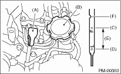

PERIODIC MAINTENANCE SERVICES > Engine Oil
1. Park the vehicle on a level surface.
2. Remove the oil level gauge and wipe away all of the oil.
3. Reinsert the level gauge all the way. Be sure that the level gauge is correctly inserted and in the correct position.
4. Remove the level gauge again and record the oil level. If the oil level is below the “L” line, add oil to bring the level up to the “F” line.

|
(A) |
Engine oil level gauge |
|
(B) |
Engine oil filler cap |
|
(C) |
Upper level |
|
(D) |
Lower level |
|
(E) |
Approx. 1 L (1.1 US qt, 0.9 Imp qt) |
|
(F) |
Notch mark |
5. Wait for several minutes until the oil has returned to the oil pan after stopping the engine.
6. Immediately after driving or while the engine is warm, the engine oil level may show be between the “F” line and the notch mark. This is caused by thermal expansion of engine oil.
7. To prevent overfilling of engine oil, do not add oil above “F” line when the engine is cold.